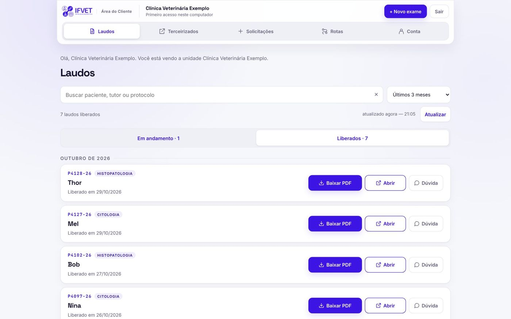
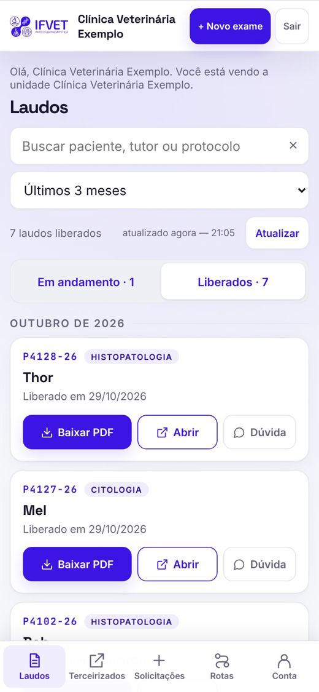

P01-26● Em uso por clínicas parceiras
Portal de laudos IFVET
- Queixa
- Laudos enviados um por um no WhatsApp e no e-mail. A clínica perguntava toda hora se o laudo tinha saído.
- Conduta
- Área da clínica com login, código para o tutor, requisição digital em 5 passos e a bancada do laboratório por trás.
- Evolução
- O laudo aparece para a clínica na hora em que é liberado, com aviso por e-mail.
Apps ScriptGoogle DriveCloudflaretestes automáticos
Ver no ar ↗